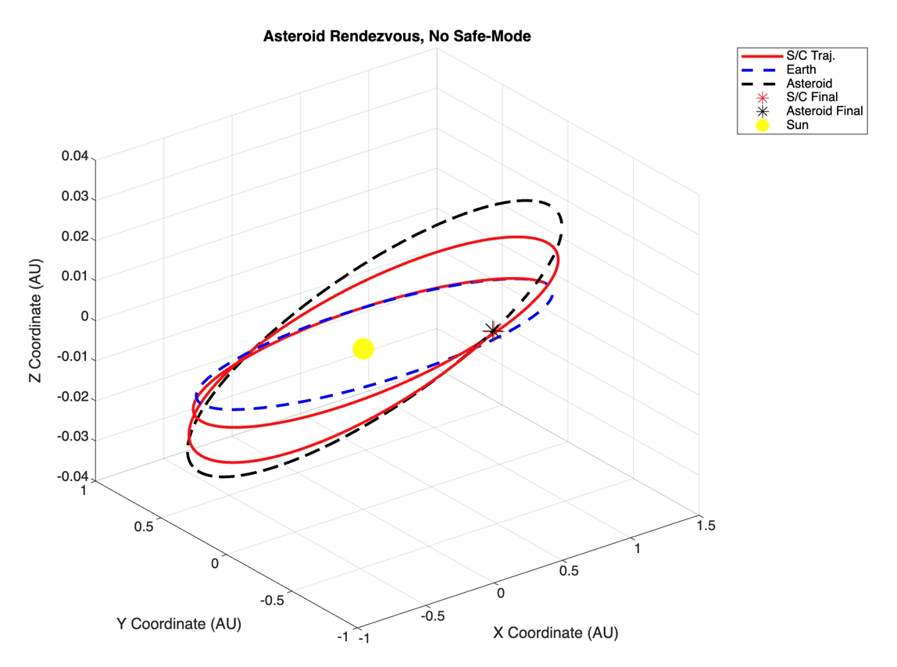
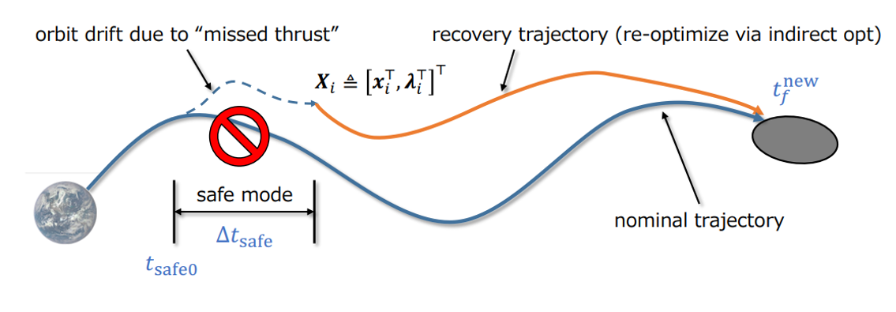
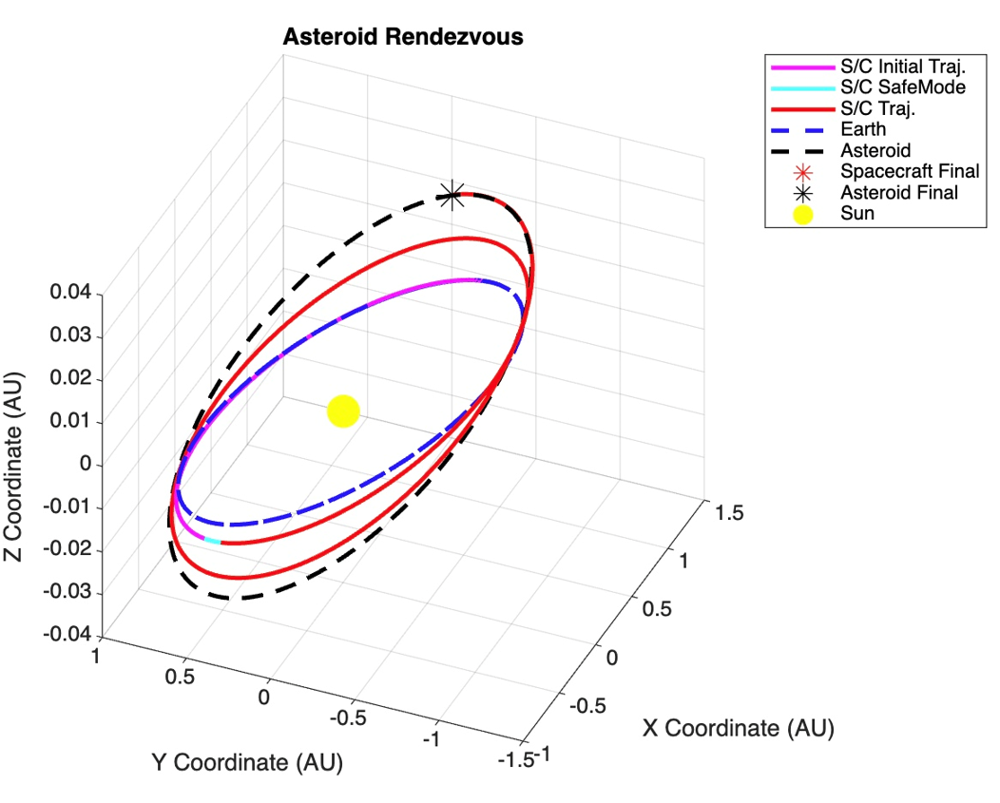

OPTIMAL CONTROL · SOLAR SAIL
Solar Sail Trajectory Optimization & Missed-Thrust Recovery
Minimum-time solar-sail asteroid rendezvous using indirect optimal control, followed by trajectory replanning after an eight-day safe-mode event.
Problem
Design a minimum-time solar-sail rendezvous and determine whether the mission can recover after an extended interruption of the nominal thrusting profile.
My role
Worked on the solar-sail optimal-control formulation, shooting solution, safe-mode event simulation, and trajectory replanning. The state-estimation portion of the original team project is intentionally omitted from this portfolio case study.
Workflow
Indirect optimal control
The nominal solar-sail trajectory is posed as a minimum-time rendezvous problem. Pontryagin's Minimum Principle yields costate dynamics and an analytical sail-attitude control law. A shooting method adjusts the initial costates and final time until the spacecraft state matches the target asteroid.
Recovery strategy
After the eight-day event, the off-nominal spacecraft state becomes a new initial condition. The indirect optimal-control problem is then solved again to generate a recovery trajectory that still reaches the asteroid.
Selected results



Outcome
Generated a minimum-time solar-sail rendezvous trajectory and demonstrated recovery from an eight-day missed-thrust event by re-solving the indirect optimal-control problem from the resulting off-nominal state.